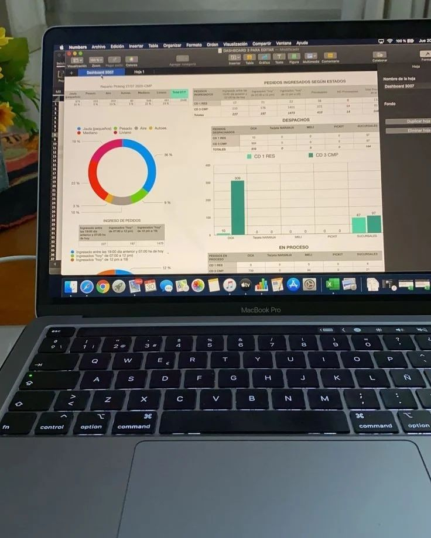

Skripsi
Market Basket Analysis — Algoritma Apriori
Menganalisis data transaksi penjualan untuk menemukan menu yang sering dibeli bersamaan, lalu menyusun rekomendasi bundling menu.
- Data processing dan data cleaning pada data transaksi.
- Transformasi data ke format keranjang belanja (basket).
- Menjalankan algoritma Apriori untuk mencari frequent itemset.
- Membentuk association rules sebagai dasar rekomendasi bundling.